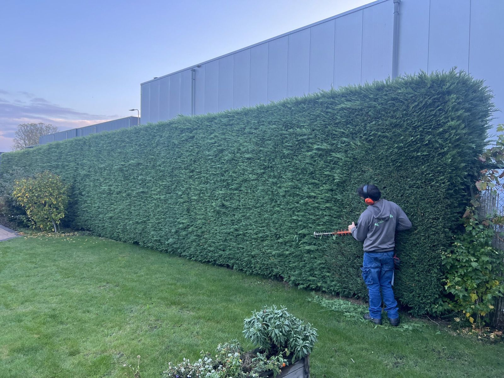
Van onderhoud tot pracht, met zorg gebracht
Tuinonderhoud en groenbeheer voor particulieren, bedrijven en VvE's, vanuit Dinteloord in heel West-Brabant. Betaalbare kwaliteit, heldere afspraken en betrouwbaar vakwerk.
Voor uw tuin of uw terrein
Eenmalig een opknapbeurt of het hele jaar door onderhoud. Wij stemmen het werk af op uw wensen en het seizoen.
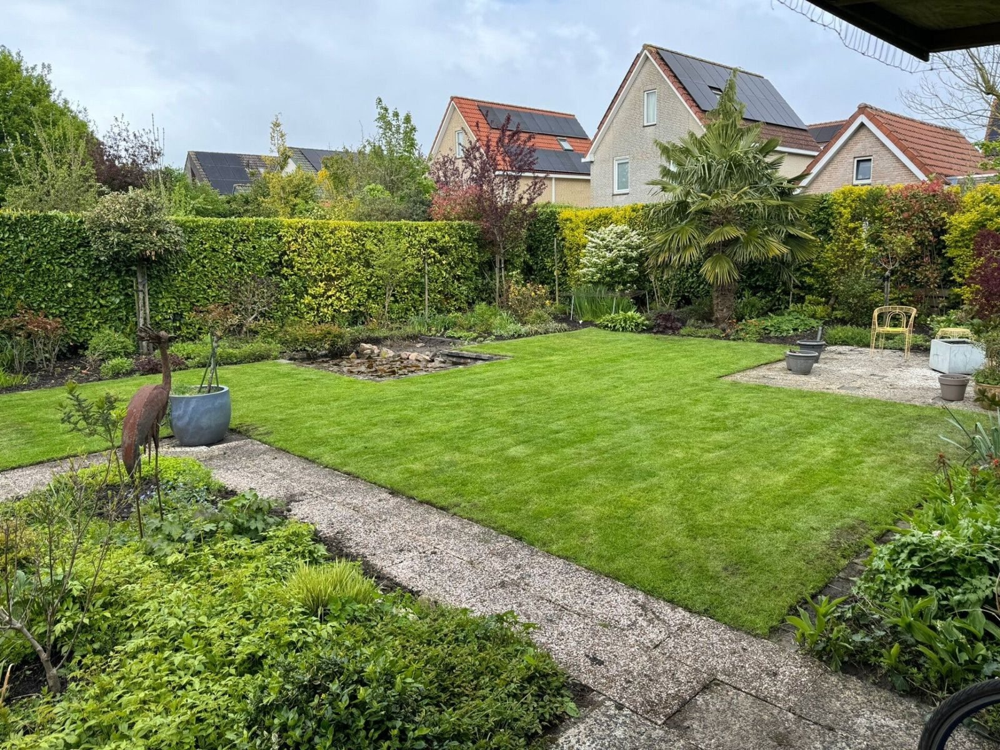
Particulieren
Van gazonmaaien en snoeiwerk tot onkruidbestrijding, aanplant en bemesting. Voor tuinen groot en klein.
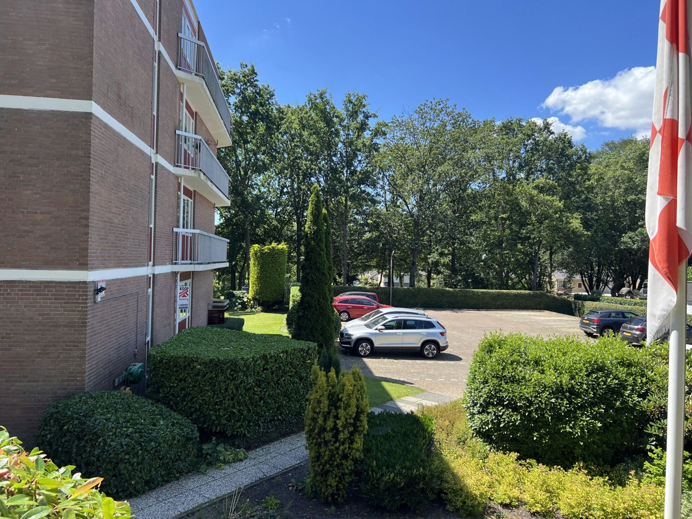
VvE's
Groenonderhoud rondom uw appartementencomplex, met aandacht voor de bewoners en de uitstraling van het terrein.
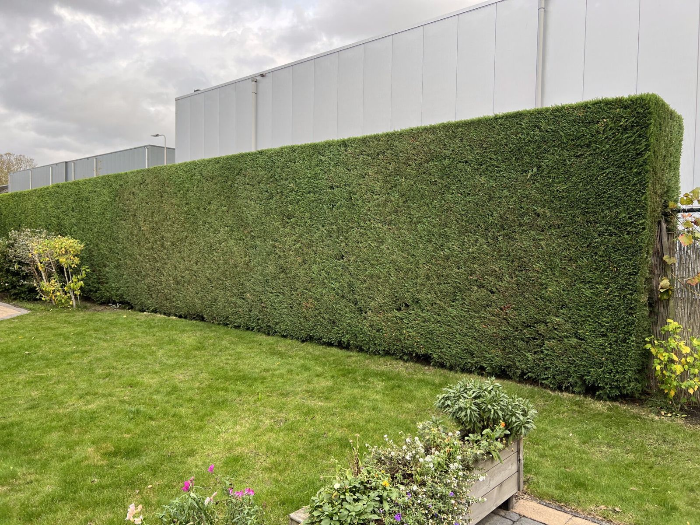
Bedrijfsterreinen
Uw terrein is uw visitekaartje. Wij houden het netjes en representatief, met een vast aanspreekpunt.
Zo werkt het
Elke tuin is anders. Daarom kijken we eerst, en weet u vooraf waar u aan toe bent.
Vrijblijvend langs
We komen bij u langs om de tuin of het terrein te bekijken en het werk op te nemen.
Duidelijke offerte
Daarna krijgt u een passende offerte. Eerlijke tarieven, zonder verrassingen achteraf.
Onderhoudscontract
Na een eerste onderhoudsbeurt kunnen we het onderhoud regelmatig blijven verzorgen, afgestemd op uw wensen.
Een greep uit ons werk
Van een nieuw beplante voortuin tot een kaarsrechte haag bij een bedrijfspand.
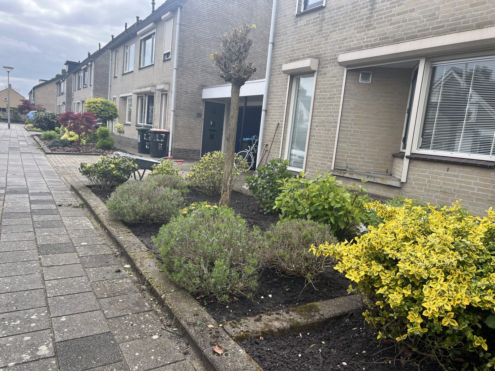
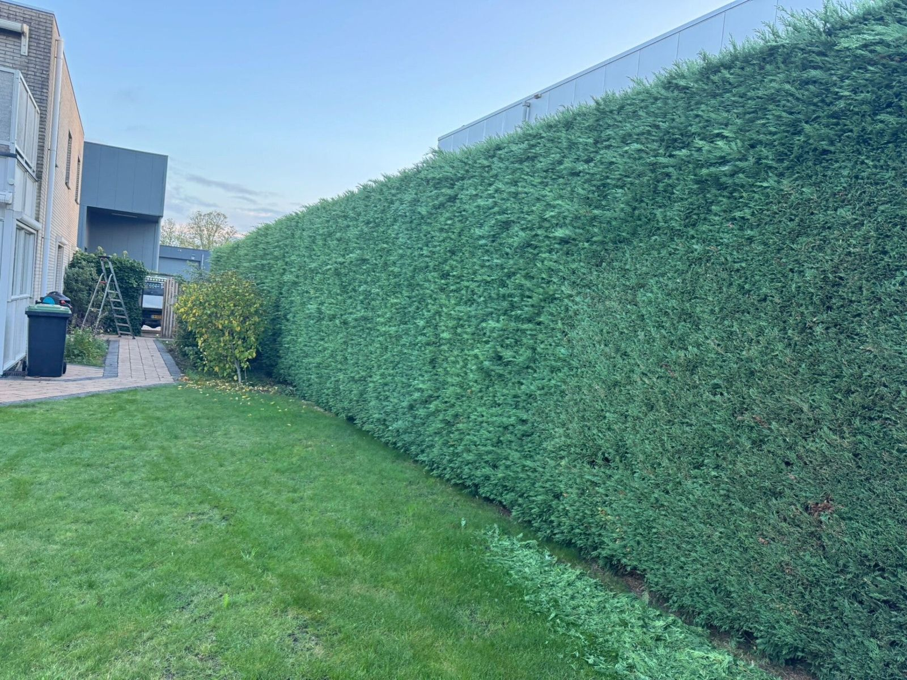
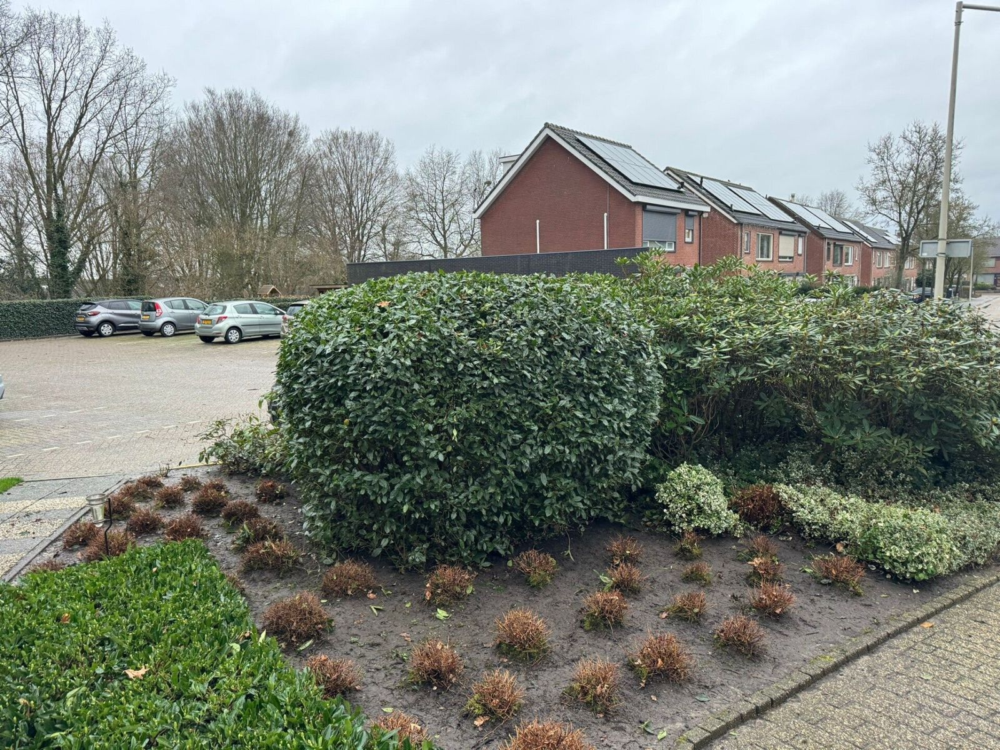
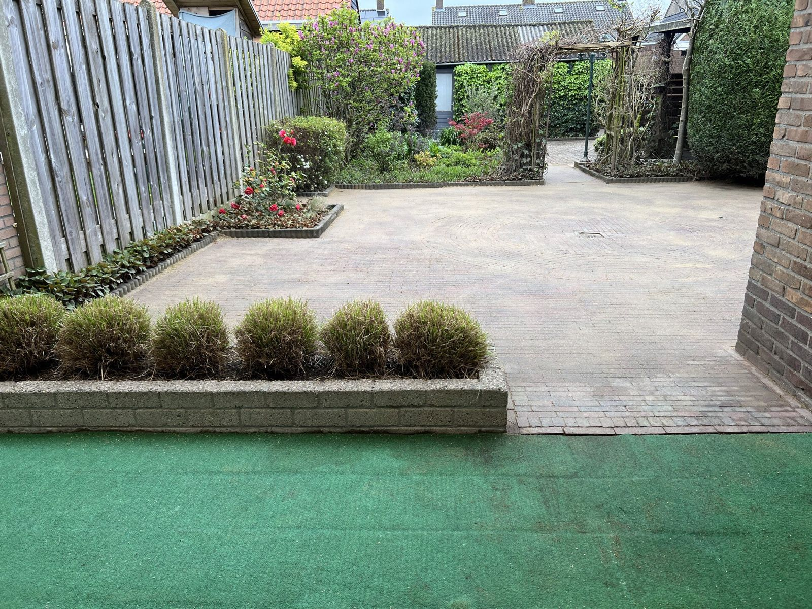
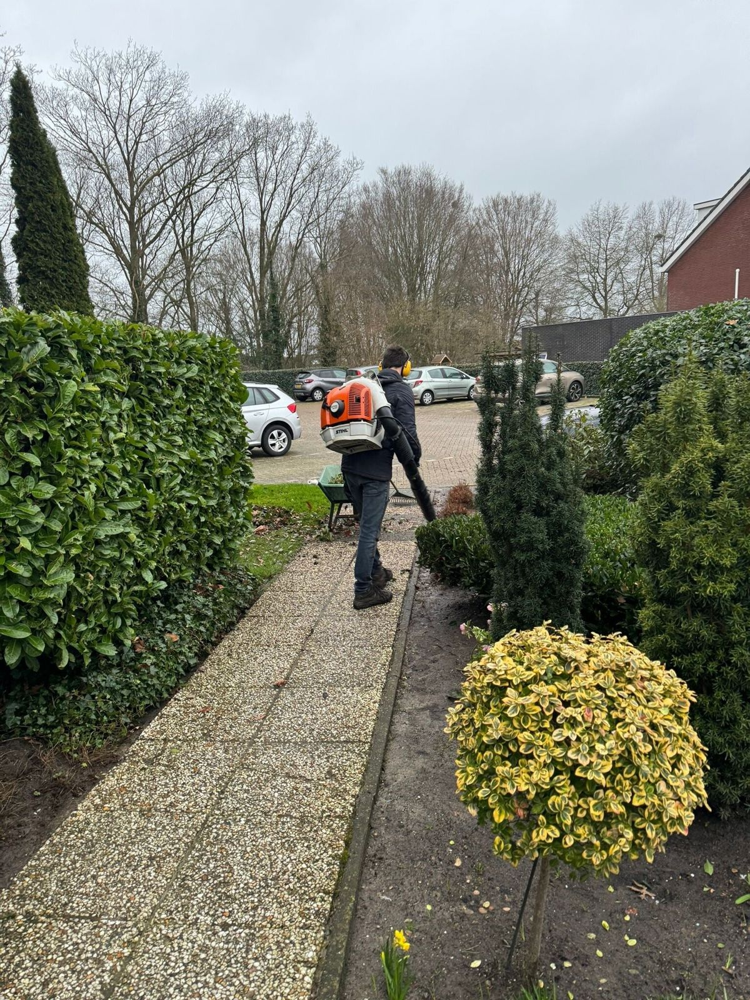
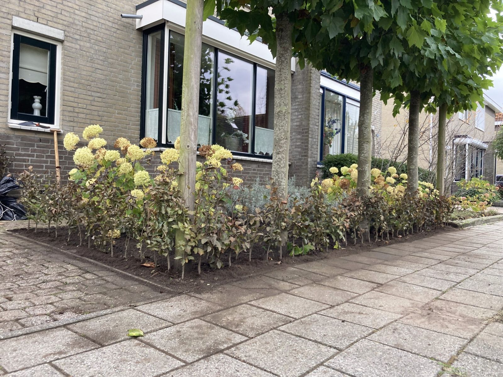
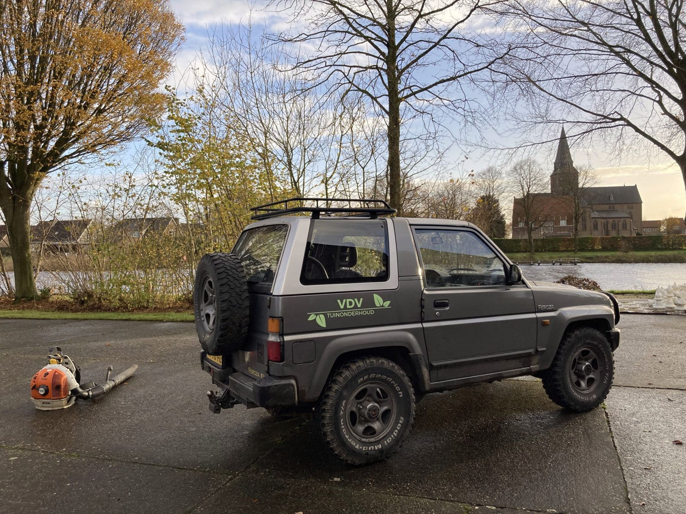
Twee broers uit Dinteloord
"Het geeft ons voldoening om zichtbaar verschil te maken."
VDV Tuinonderhoud begon in de zomer van 2021 met het onkruidvrij maken van tuinen rond Dinteloord. Inmiddels verzorgen we tuinonderhoud en groenbeheer voor particulieren, bedrijven en VvE's.
Van een overwoekerde tuin weer een fijne buitenruimte maken, of een bedrijfsterrein het hele jaar netjes houden: we werken met oog voor detail. U weet met wie u te maken heeft en wat u van ons kunt verwachten.
Veelgestelde vragen
Wat zijn jullie tarieven?
Elke tuin is uniek. De kosten hangen af van de gewenste werkzaamheden. Daarom komen we eerst vrijblijvend bij u langs om de tuin te bekijken en het werk op te nemen. Daarna krijgt u een passende offerte.
Verzorgen jullie ook bedrijfsterreinen?
Zeker. We verzorgen groenonderhoud voor particulieren én bedrijven, inclusief bedrijfstuinen, VvE-terreinen en instellingen.
Bieden jullie een onderhoudscontract aan?
Ja. Vaak stellen we dit voor nadat we eerst een onderhoudsbeurt hebben uitgevoerd. Daarna verzorgen we het onderhoud op regelmatige basis, volledig afgestemd op uw wensen.
Offerte aanvragen
Vertel kort om wat voor tuin of terrein het gaat. We nemen contact op en komen vrijblijvend langs.
Liever even bellen of appen?
We denken graag met u mee over uw tuin of terrein.